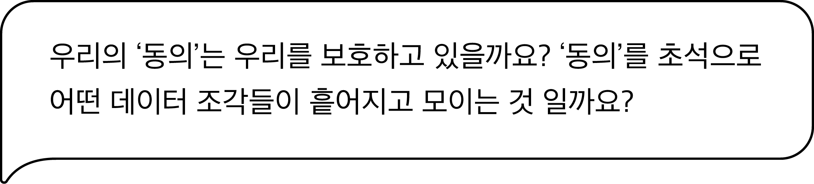

정보 수탁자 (information fiduciary)
‘페이스북 타임라인에 ‘당신과 가장 닮은 연예인은 누구일까요?’라는 퀴즈가 제시됐을 때, ‘알아보기’를 클릭하는 이용자의 심정은 그게 누구인지 궁금하다는 것이지, 그 과정에서 자신의 개인정보가 어떻게 수집되고 그렇게 수집된 정보가 어떻게 이용되는지를 이해하고, 그 점에 대해 동의하겠다는 것이 아니다.’
글 레슬리 K. 존(Leslie K. John), <동의 없는 동의>
개인정보 자기결정권 이라는 표현이 있습니다. 헌법재판소는 이것을 ’자신에 관한 정보의 공개와 이용에 관해 스스로 결정할 권리’라고 설명합니다. 이는 인간이라면 누구나 누려야 할 사생활의 비밀과 자유, 인간의 존엄과 가치, 행복추구권 등의 이념과 맞닿아 있습니다.
법률가들의 이런 설명이 그럴듯하게 들릴지는 모르겠지만, 인터넷과 통신망을 통하여 이뤄지는 개인정보 수집, 처리, 이용의 현실은 다소 거리가 멀어 보입니다. 위의 사례에서 알 수 있듯이 이용자들은 무슨 정보가 어떻게 수집돼 무슨 용도로 사용되는지를 이해하지 못합니다. 무엇보다도 개인정보의 수집과 이용 기법은 이용자들이 이해할 수 있는 수준을 넘어선 지 한참되었습니다.
‘정보 수탁자(information fiduciary)’는 이토록 희미한 정보활용의 이해도를 높이고, 이용자의 ‘동의’에 의존하던 기존의 법을 전환시켜 사업자가 스스로 ‘고객보호’, ‘평균적 고객의 이해가능성’의 가치를 기준으로 약관을 공표할 수 있도록 돕고자 합니다.